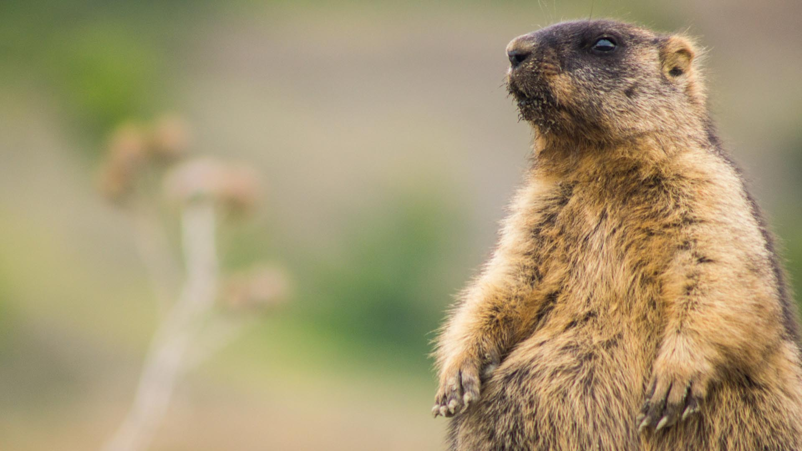

Крупные грызуны, достигающие веса до 5-6 кг, живут семьями. Каждая семья сурков имеет одну основную нору, где проходит зимняя спячка и появляется молодняк, и несколько кормовых, или защитных, нор, которые соединяются с зимовочной норой сетью протоптанных зверьками тропинок.